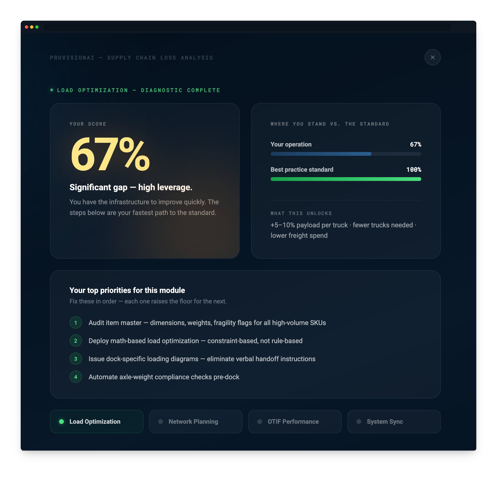
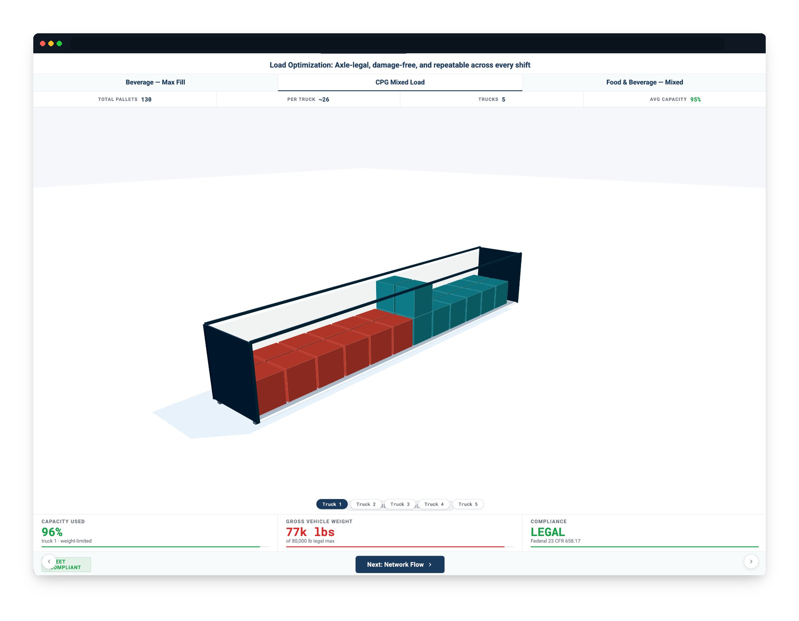
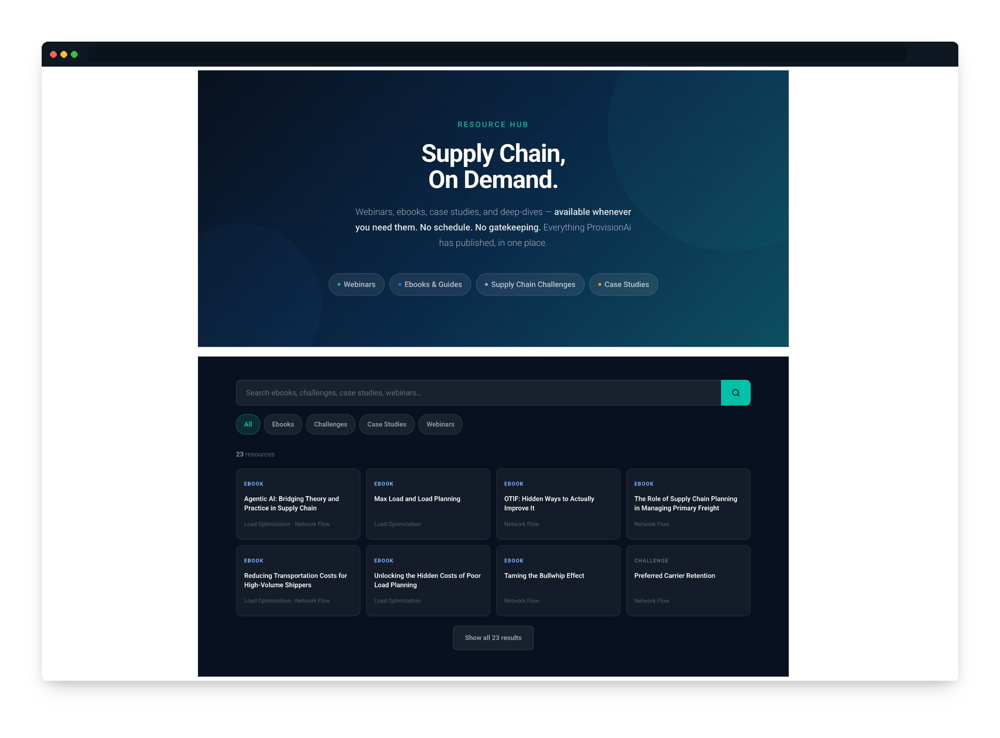

Proof
Three experiences built for real companies with real sales problems. Different formats, same method, same outcome — the prospect arrives already sold on the problem.
Supply chain · Diagnostic tool
The problem
ProvisionAI's buyers were convinced their supply chains were fine. No pain, no urgency, no reason to change. The product was excellent. The prospect couldn't feel why they needed it.
What we built
A four-module self-diagnostic built around loss — not features. Prospects score themselves. The lowest score becomes their #1 priority automatically. They leave with a personalised action plan built from their own answers.
What it changes
The call starts with the prospect already knowing their biggest gap. The rep arrives to confirm, not convince.
Read the case →
Supply chain · Interactive explainer
The problem
Load optimisation software is invisible by definition — it works inside systems buyers can't see. The value was real but abstract. Prospects couldn't connect the software to the savings.
What we built
A real-time 3D truck loading visualiser. Three load scenarios. The buyer watches the algorithm pack their truck in real time and runs their own ROI calculation against their actual freight spend.
What it changes
The abstract becomes concrete. They've seen their truck get packed before the demo. The question shifts from "does this work?" to "when can we start?"
Read the case →
Supply chain · Full site + resource hub
The problem
ProvisionAI needed to own the supply chain optimisation conversation online. Competitors had more brand recognition. The product had more depth. The site needed to close that gap before a prospect ever picked up the phone.
What we built
A GEO-optimised full site built to be found and understood — by humans and AI equally. A resource hub with podcasts, case studies, and thought leadership organised so a CFO, an ops VP, and a supply chain analyst each find what they need.
What it changes
Prospects arrive from organic search already educated. The site does the selling before the SDR sends the first email.
Read the case →